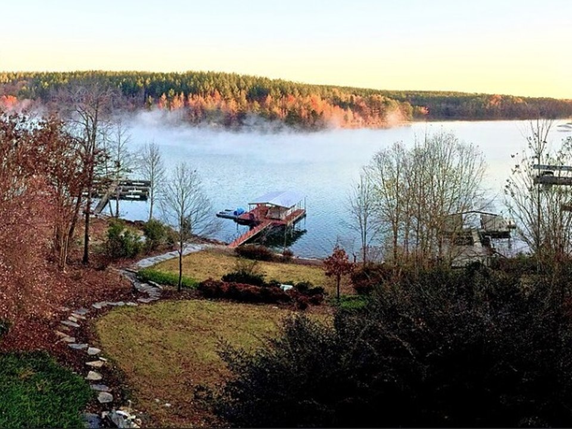

Private · Lakefront
Lake Keowee vacation rentals
The best stay here is a lake house with its own dock, many with hot tubs and screened porches. Book early for summer and fall weekends.
Keowee Vacation Rentals for Lake Keowee vacation rentalsClear water and waterfalls you reach by boat.
In South Carolina’s Upstate, two linked lakes sit at the foot of the Blue Ridge. Lake Keowee is broad and sunny, with lakeside restaurants. Lake Jocassee, above it, is deep, clear and blue-green, ringed by protected forest, with waterfalls tumbling straight into the lake. Rent a boat, find a waterfall and slow right down.

In our plane it’s a short flight.
Where we’re staying Dinner Things to do The plan
I’ll handle the flight planning; you handle the fun planning!
Time illustration: direct distance at 150 KTAS plus 15 minutes for departure and arrival, matching the discovery page. Use ForeFlight for your actual flight plan.
Check the weekend weather at both ends → Flight category, your minimums and the crosswind on the best runway.
More in Aviation & getting around below. Crew cars change often: call the FBO before you go. How to have a rental car waiting at the FBO · Know something we missed? Tell us.
KCEU, Oconee County Regional near Clemson, is about 20 minutes from Lake Keowee and 40 from Lake Jocassee. KLQK, Pickens County, is the alternative, about 25 minutes from Keowee’s east shore and 35–40 from Jocassee.
365 Airport Road, Seneca, SC 29678
240 Airport Road, Liberty, SC 29657
The county FBO lists a crew car, and Hertz and Enterprise rent cars at the airport six days a week; reserve ahead. Ask about two-night parking and fees. On Clemson football weekends the area fills up.
Pickens County (KLQK): the county FBO lists Titan 100LL and Jet A, self-serve and full-serve, and a courtesy car, with staff on site about 8–5 daily; after-hours service costs extra. Ask about two-night parking and a rental car. No live fuel price is shown.
The Blue Ridge escarpment rises to the north. Review terrain, the sectional and current NOTAMs, and watch for afternoon mountain storms in summer.
This is lake-house country rather than resort country. Rates and availability need travel dates.
The best stay here is a lake house with its own dock, many with hot tubs and screened porches. Book early for summer and fall weekends.
Keowee Vacation Rentals for Lake Keowee vacation rentalsLakeside villas and cabins in the state park on Lake Jocassee, steps from the boat ramp. Simple, and very popular; reserve far ahead.
Official details for Devils Fork State Park villasA dependable hotel with a deck and pool overlooking Lake Keowee. Easy if you want a hotel close to the airport and restaurants.
Official details for Fairfield Inn & Suites Seneca ClemsonPrices and availability for your dates, through our partner Stay22. This is an affiliate link: we may earn a commission at no cost to you. The picks above are never paid.
Dining is casual. Reserve on weekends, especially during Clemson football season.
Lake Keowee’s best-known restaurant, with a second-floor dining room and panoramic lake and mountain views. Go for sunset.
Official details for The Lighthouse RestaurantAn island-style bar and grill beside Keowee Marina. Arrive by car or by boat.
Official details for Tiki Hut Lakeside GrillSteaks, seafood and classic American dishes in a relaxed setting. An easy second night.
Official details for Copper River GrillLake Jocassee is the highlight. Plan one full day on the water.
Guided pontoon tours from Devils Fork State Park visit waterfalls that drop straight into the lake, with stops to swim in summer. Book ahead; tours fill on weekends.
Rental companies deliver pontoons, canoes and kayaks to the Devils Fork dock on Jocassee, and Sunset on Keowee rents boats on Lake Keowee. The water is famously clear and cold.
Sunset on Keowee boat rentalsKeowee Tiki Kruizin runs relaxed cruises on a floating tiki bar boat around Lake Keowee. Fun for an afternoon or a sunset; book ahead.
Keowee Tiki KruizinAmong the highest waterfalls in the eastern United States, just over the North Carolina line, about 45 minutes away. A short paved walk to the overlook.
A granite mountain with a demanding trail to the top and wide views of the lakes and the Upstate. Allow most of a day for the summit.
The South Carolina Botanical Garden and the university campus make an easy morning near the airport.
This prototype links to the county visitor site. It does not yet match events to your travel dates.
Warm days and swimming at the waterfalls. Weekends at Devils Fork are busy; arrive early.
Home game weekends fill every hotel and restaurant for miles. Great fun, or a reason to choose another weekend.
The forests around Jocassee turn gold. Cool, clear and beautiful from the water.
Check the county calendar when choosing a weekend, and confirm dates and tickets with the organizer.
A sample Friday–Sunday weekend: a sunset dinner, a day on Jocassee and a waterfall. No bookings or availability confirmed.
Land at KCEU or KLQK mid-morning and pick up a car.
Lunch at the Tiki Hut by Keowee Marina.
A short pontoon cruise on Lake Keowee, then fly home.
Land at KCEU or KLQK, subject to weather and your actual flight plan, and pick up the car.
Check in on Lake Keowee and get down to the dock.
Sunset dinner at The Lighthouse.
A waterfall boat tour, or your own pontoon from Devils Fork.
A swim and a picnic by the falls, then a slow cruise back.
Dinner at Copper River Grill.
A short drive to Whitewater Falls.
Return the car and allow time at the FBO.
Let weather and your flight plan set the departure.
The summit trail at Table Rock State Park.
Kayaks on Lake Jocassee, or Whitewater Falls.
A second sunset at The Lighthouse.
These details make the difference between an appealing list and a usable getaway.
Lodging and the rental car first, then a boat tour or rental.
Clemson home games fill the area. Check the schedule before booking.
Jocassee stays cold and deep even in summer. Swim with care.
Rates, tours and restaurant hours are date-dependent. No availability or live price is implied here.
Picks and links reviewed by WingAway Weekends. Hours, prices, menus and availability change often, so confirm directly with each place before booking. Spotted something out of date, or have a favorite we missed? Email us at hello@wingawayweekends.com.
WingAway Weekends helps you discover the destination. Use ForeFlight and current official aviation information for route, performance, weather, NOTAMs and preflight decisions. Flight planning and PIC responsibility stay with the pilot.
One fly-in weekend, a Fly to Lunch pick and the newest guides, about once a month.
Free. Unsubscribe anytime.